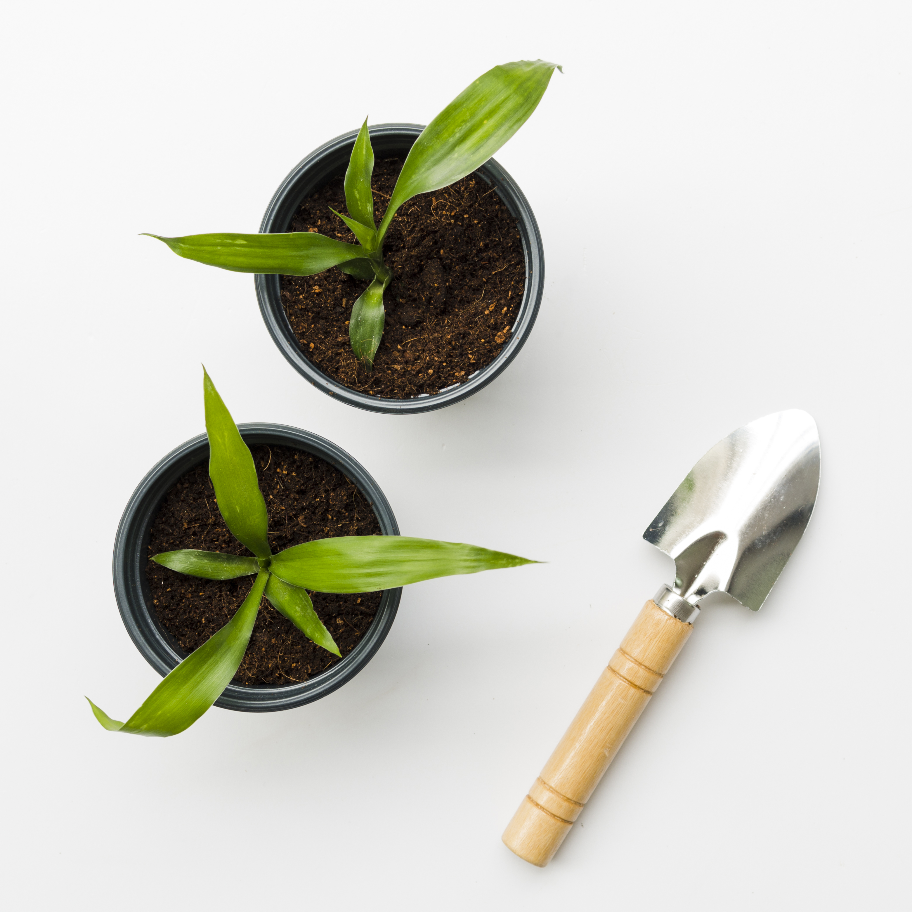
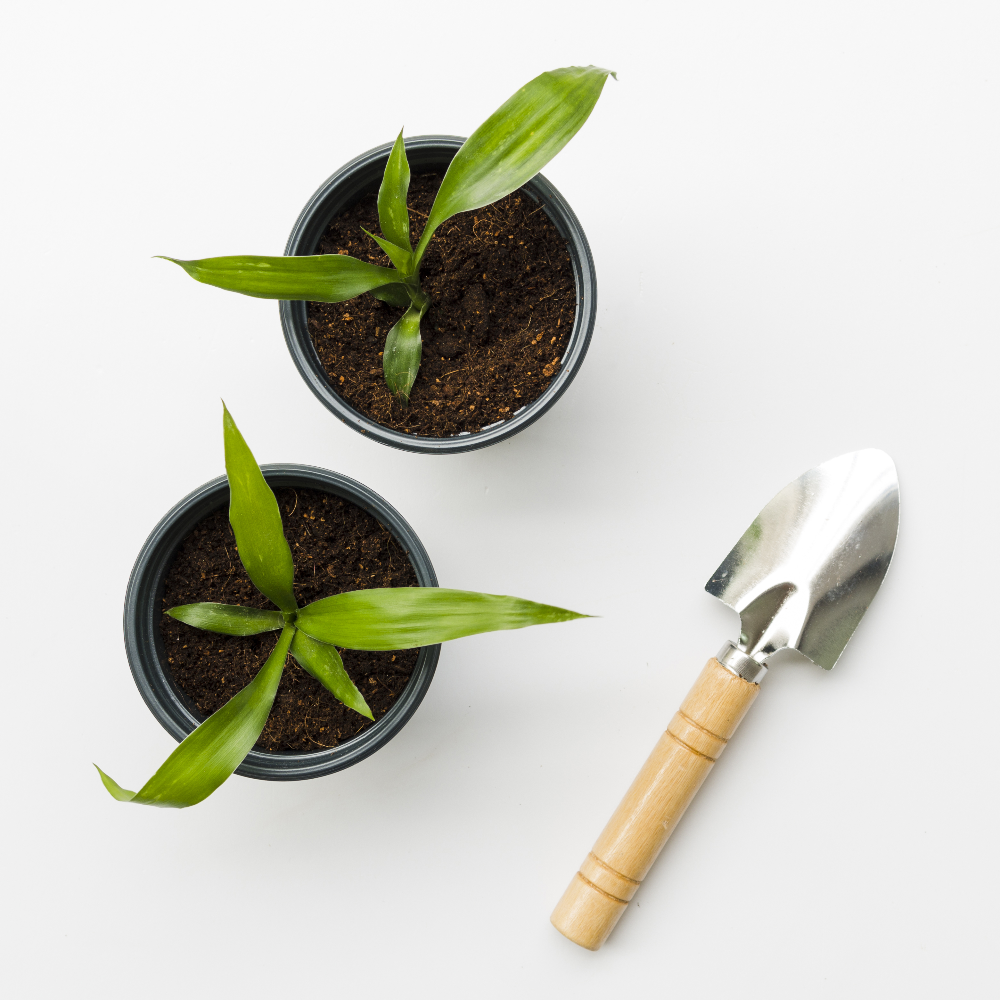

Visita nuestra tienda online


🌱 "Cuida y cultiva" – Descubre el placer de ver crecer tus plantas con amor y dedicación


🥕 "De la huerta a tu mesa" – Cultiva tus propios alimentos y disfruta de la frescura natural.
 

🛠️ "Prepara tu jardín" – Encuentra todo lo que necesitas para crear un espacio verde perfecto.